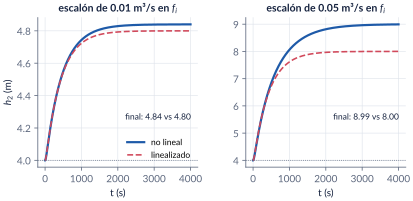
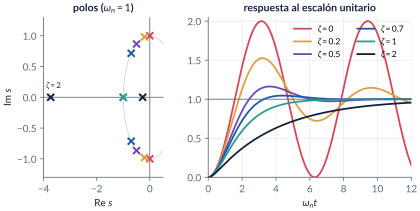
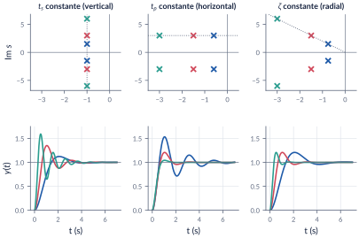
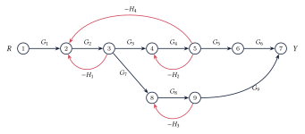
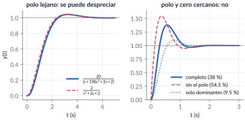

3. Modelado II: linealización, segundo orden y diagramas de bloques
Semanas 3–4 · cuatro clases
Los procesos reales casi nunca son lineales, y casi nunca son un solo bloque. En esta parte aprendemos a linealizar alrededor de un punto de operación, llegamos al otro gran protagonista de los modelos orientados al control, el sistema de segundo orden, y traducimos sus polos en números que se miden en una respuesta: tiempo de subida, de pico, sobrepico y tiempo de establecimiento. Luego juntamos bloques: álgebra de bloques y ley de Mason. Cerramos con los sistemas de orden superior: cuándo se pueden aproximar por sus polos dominantes y cómo simplificarlos.
Al terminar esta parte usted podrá
- Linealizar un modelo no lineal alrededor de un punto de operación y obtener su función de transferencia en variables desviación.
- Reconocer un segundo orden en forma estándar, clasificarlo por su \(\zeta\) y ubicar sus polos.
- Calcular \(t_r\), \(\tp\), \(\OS\) y \(\ts\) de un subamortiguado y traducir especificaciones en una región del plano-\(s\).
- Reducir diagramas de bloques con álgebra de bloques y con la ley de Mason, y escribir la ecuación característica.
- Decidir cuándo un sistema de orden superior se puede aproximar por sus polos dominantes y simplificarlo.
Ruta de las clases
| Clase | Qué se ve | Handout | Scripts |
|---|---|---|---|
| 1 | ¿Y si no es lineal? Linealización con Taylor; el reactor; los dos tanques | §3.1–3.3 | C3_Ej1, C3_Ej2, crearModelo_Tanques |
| 2 | Forma estándar, casos por \(\zeta\), masa-resorte; \(t_r\), \(\tp\), \(\OS\), \(\ts\); el plano-\(s\) | §3.4–3.5 | C3_Ej3 |
| 3 | Diagramas de bloques; diseño de \(K\) y \(K_h\); ley de Mason | §3.6–3.8 | C3_Ej4–C3_Ej6, crearModelo_Servo |
| 4 | Polos dominantes, efecto de los ceros, reducción de orden | §3.9–3.10 | C3_Ej7, C3_Ej8 |
Lo esencial, en una página
Linealización
Alrededor de un equilibrio \((\eq{x},\eq{u})\) cada no linealidad se reemplaza por su recta tangente: \[ \dot{\dev{x}}\approx\left.\frac{\partial f}{\partial x}\right|_\ast\dev{x}+\left.\frac{\partial f}{\partial u}\right|_\ast\dev{u}. \] Solo vale cerca del punto: con escalones grandes el modelo lineal se equivoca.

Dos tanques por gravedad nunca oscilan
En la planta de dos tanques \(C_2=-C_1\) siempre, y entonces \(\zeta\geq1\) para cualesquiera áreas y válvulas. El ejemplo subamortiguado de la versión anterior usaba valores que no corresponden a ningún par de tanques reales. Para ver oscilaciones usamos una masa con resorte y amortiguador.
Segundo orden
\[ T(s)=K\,\frac{\wn^2}{s^2+2\zeta\wn s+\wn^2},\qquad p_{1,2}=-\zeta\wn\pm j\,\wn\sqrt{1-\zeta^2}. \] \(\zeta=0\): oscila para siempre; \(0<\zeta<1\): subamortiguado; \(\zeta=1\): crítico; \(\zeta>1\): sobreamortiguado.

| característica | fórmula | la fija |
|---|---|---|
| tiempo de subida (0–100 %) | \(t_r=(\pi-\cos^{-1}\zeta)/\omega_d\) | \(\zeta\) y \(\wn\) |
| tiempo de pico | \(\tp=\pi/\omega_d\) | la parte imaginaria del polo |
| sobrepico | \(\OS=100\,e^{-\zeta\pi/\sqrt{1-\zeta^2}}\) | solo \(\zeta\) (el ángulo) |
| establecimiento (2 %) | \(\ts\approx4/(\zeta\wn)\) | la parte real del polo |

Bloques y Mason
Serie: \(G_1G_2\). Paralelo: \(G_1+G_2\). Retroalimentación negativa: \(\dfrac{G}{1+G\Hs}\). Ley de Mason: \[ T=\frac{1}{\Delta}\sum_k P_k\Delta_k,\qquad \Delta=1-\sum L_a+\sum L_bL_c-\cdots \] El discriminante \(\Delta\) es el denominador: \(\Delta=0\) es la ecuación característica.

Polos dominantes
Un polo extra se puede despreciar si está unas diez veces más a la izquierda que los dominantes (criterio de Clement), conservando la ganancia DC. Un cero cerca de los dominantes, en cambio, cambia mucho el sobrepico.

Explorador del segundo orden
Mueva \(\zeta\), \(\wn\) y la ganancia. Observe los polos en el plano-\(s\), la respuesta al escalón con sus envolventes y la banda del 2 %, y compare las fórmulas con lo que se mide sobre la curva.
Retos con el explorador
- Busque el \(\zeta\) que da 20 % de sobrepico y el \(\wn\) que da \(\tp=1\) s. Compárelos con el diseño del servo (\(\zeta=0.456\), \(\wn=3.53\)).
- Con \(\zeta=0.4\), duplique \(\wn\): ¿qué cambia y qué no?
- Encuentre el \(\zeta\) para el cual el \(\ts\) medido es mínimo con \(\wn=1\). ¿Coincide con \(4/(\zeta\wn)\)?
Códigos de esta parte
Los bloques salen directamente de los archivos del repositorio. Ejecute antes iniciarCurso.
Derivada simbólica (§3.2).
syms x real
f = x*sqrt(x^2 + 5*x);
df = diff(f, x) % derivada simbólica
x0 = 5;
a0 = double(subs(f, x, x0)) % f(x0) = 35.36 (no es cero: x0 no es equilibrio)
a1 = double(subs(df, x, x0)) % f'(x0) = 12.37
flin = @(xx) a0 + a1*(xx - x0); % aproximación de primer orden
solve(f == 0, x) % los equilibrios son x* = 0 y x* = -5El reactor con jacobian.
syms xs us real
k = 1; V = 1; c = 2; % L/(mol min), L, mol/L
F = -k*xs^2 + us*(c - xs)/V;
J = jacobian(F, [xs us]); % [df/dx, df/du]
ab = double(subs(J, [xs us], [1 1])) % -> [-3 1]: xhat' = -3 xhat + uhat
G = tf(ab(2), [1 -ab(1)]) % Xhat(s)/Uhat(s) = 1/(s+3)Los dos tanques: equilibrio, coeficientes y función de transferencia (§3.3).
A1 = 2; A2 = 3; Cv1 = 0.1; Cv2 = 0.05; % m^2, m^2, m^{5/2}/s
h2e = 4; % altura de operación del tanque 2 (m)
fe = Cv2*sqrt(h2e); % equilibrio: f_i* = f_1* = f_2*
h1e = h2e + (fe/Cv1)^2;
C1 = Cv1/(2*sqrt(h1e - h2e)); C2 = -C1; % df1/dh1, df1/dh2
C3 = Cv2/(2*sqrt(h2e)); % df2/dh2
K1 = 1/C1; tau1 = A1/C1; K2 = C1/(C3 - C2); tau2 = A2/(C3 - C2);
s = tf('s');
G = K1*K2/((tau1*s + 1)*(tau2*s + 1) + K1*K2*C2) % Hhat2/Fhat_i
wn = sqrt(C1*C3/(A1*A2));
zeta = ((C1 + C3)/A2 + C1/A1)/(2*wn)
dcgain(G) % = 1/C3 = 80Lineal contra no lineal.
fig = estiloFigura(1100, 420);
pasos = [0.01 0.05];
for k = 1:2
df = pasos(k);
rhs = @(t, h) [(fe + df - Cv1*sqrt(max(h(1) - h(2), 0)))/A1;
(Cv1*sqrt(max(h(1) - h(2), 0)) - Cv2*sqrt(max(h(2), 0)))/A2];
[t, h] = ode45(rhs, [0 4000], [h1e; h2e]); % modelo no lineal
yl = h2e + df*step(G, t); % modelo lineal + equilibrio
subplot(1, 2, k); plot(t, h(:,2), t, yl, '--'); grid on; xlabel('$t$ (s)');
title(sprintf('escal\\''on de %.2f m$^3$/s', df));
fprintf('df = %.2f: h2 final no lineal %.2f m, lineal %.2f m\n', df, h(end,2), yl(end));
end
legend('no lineal', 'linealizado', 'Location', 'southeast');Fórmulas contra stepinfo (§3.5).
zeta = 0.4; wn = 1;
F = segundoOrden(zeta, wn) % fórmulas de las notas
S = stepinfo(wn^2/(s^2 + 2*zeta*wn*s + wn^2)) % medido sobre la simulación
fprintf('%%OS: fórmula %.2f stepinfo %.2f\n', F.OS, S.Overshoot);
fprintf('tp: fórmula %.3f stepinfo %.3f\n', F.tp, S.PeakTime);
fprintf('ts: fórmula %.3f stepinfo %.3f\n', F.ts, S.SettlingTime);
fprintf('tr: 0-100 %.3f, aprox. 10-90 %.3f, stepinfo (10-90) %.3f\n', F.tr0100, F.tr1090, S.RiseTime);La función del curso segundoOrden.
function F = segundoOrden(zeta, wn)
% SEGUNDOORDEN Características del escalón de wn^2/(s^2 + 2 zeta wn s + wn^2)
% según las fórmulas de las notas (sección 3.5). Para 0 < zeta < 1:
% F.wd frecuencia amortiguada wn sqrt(1 - zeta^2)
% F.beta ángulo del polo (rad) acos(zeta)
% F.OS sobrepico (%) 100 exp(-zeta pi / sqrt(1 - zeta^2))
% F.tp tiempo de pico pi/wd
% F.ts establecimiento 2 % 4/(zeta wn) (F.ts5: 3/(zeta wn))
% F.tr0100 subida 0-100 % (pi - beta)/wd
% F.tr1090 subida 10-90 % (aprox.) (2.3 zeta^2 - 0.078 zeta + 1.12)/wn
% F.polos -zeta wn ± j wd
F.zeta = zeta; F.wn = wn;
F.wd = wn*sqrt(1 - zeta^2);
F.beta = acos(zeta);
F.OS = 100*exp(-zeta*pi/sqrt(1 - zeta^2));
F.tp = pi/F.wd;
F.ts = 4/(zeta*wn);
F.ts5 = 3/(zeta*wn);
F.tr0100 = (pi - F.beta)/F.wd;
F.tr1090 = (2.3*zeta^2 - 0.078*zeta + 1.12)/wn;
F.polos = -zeta*wn + [1; -1]*1j*F.wd;
endDiseño de \(K\) y \(K_h\) (§3.7).
OS = 0.20; tp = 1; % especificaciones
zeta = zetaDeOS(OS) % = -ln(OS)/sqrt(pi^2 + ln(OS)^2)
wn = pi/(tp*sqrt(1 - zeta^2))
K = wn^2 % término independiente
Kh = (2*zeta*wn - 1)/K % término en s: 1 + K Kh = 2 zeta wn
s = tf('s');
G = series(K/s, 1/(s + 1)); % camino directo
H = 1 + Kh*s; % sensor de posición + tacómetro
T = feedback(G, H) % lazo cerrado
S = stepinfo(T) % Overshoot ~ 20, PeakTime ~ 1Álgebra de bloques (§3.6).
s = tf('s');
G1 = 1/(s + 1); G2 = 2/s; G3 = 5/(s + 3); H1 = 1; H2 = 0.5;
interno = feedback(G2, H1); % lazo interno: 2/(s+2)
directo = series(series(G1, interno), G3);
T = minreal(feedback(directo, H2)) % -> 10/(s^3+6s^2+11s+11)
pole(T) % raíces de la ecuación característica
parallel(G1, G3) % G1 + G3 (bloques en paralelo)Mason contra resolver las ecuaciones de los nodos (§3.8).
syms G1 G2 G3 G4 G5 G6 G7 G8 G9 H1 H2 H3 H4 R
x = sym('x', [1 9]);
ecs = [x(1) == R
x(2) == G1*x(1) - H1*x(3) - H4*x(5)
x(3) == G2*x(2)
x(4) == G3*x(3) - H2*x(5)
x(5) == G4*x(4)
x(6) == G5*x(5)
x(7) == G7*x(3) - H3*x(8)
x(8) == G8*x(7)
x(9) == G6*x(6) + G9*x(8)];
sol = solve(ecs, x);
Tdirecta = simplify(sol.x9/R);
% Ley de Mason
L1 = -G2*H1; L2 = -G2*G3*G4*H4; L3 = -G4*H2; L4 = -G8*H3;
D = 1 - (L1+L2+L3+L4) + (L1*L3 + L1*L4 + L2*L4 + L3*L4) - L1*L3*L4;
P1 = G1*G2*G3*G4*G5*G6; D1 = 1 - L4;
P2 = G1*G2*G7*G8*G9; D2 = 1 - L3;
Tmason = (P1*D1 + P2*D2)/D;
simplify(Tdirecta - Tmason) % -> 0Un cero y un polo que no se pueden ignorar (§3.9).
Tc = 62.5*(s + 2.5)/((s^2 + 6*s + 25)*(s + 6.25));
Ta = 10*(s + 2.5)/(s^2 + 6*s + 25); % sin el polo en -6.25
Tb = 25/(s^2 + 6*s + 25); % solo los polos dominantes
for T = {Tc, Ta, Tb}
S = stepinfo(T{1});
fprintf('%%OS = %5.1f ts = %.2f s\n', S.Overshoot, S.SettlingTime);
endIgualación de momentos (§3.10).
GH = 6/(s^3 + 6*s^2 + 11*s + 6);
[GL, d] = reduccionMomentos(GH) % d = [d1 d2]
pole(GL)
figure; step(GH, GL, '--', 8); grid on; legend('$G_H$', '$G_L$', 'Location', 'southeast');verificarCap03 comprueba los números clave del capítulo.
function verificarCap03()
% VERIFICARCAP03 Pruebas automáticas de los números del capítulo 3.
% >> verificarCap03
% (Los mismos números se verificaron con python-control en
% herramientas/cap03_numeros.py.)
raiz = fileparts(mfilename('fullpath'));
addpath(fullfile(raiz, '..', 'comun'), raiz);
s = tf('s'); fallas = 0; n = 0;
function revisar(nombre, valor, esperado, tol)
n = n + 1;
if abs(valor - esperado) <= tol
fprintf(' ok %-38s %12.4f\n', nombre, valor);
else
fprintf(2, ' FALLA %-37s %12.4f (esperado %g +- %g)\n', nombre, valor, esperado, tol);
fallas = fallas + 1;
end
end
fprintf('3.2 Linealización\n');
f = @(x) x.*sqrt(x.^2 + 5*x);
revisar('f(5)', f(5), 35.355, 1e-3);
revisar('f''(5) (diferencia central)', (f(5 + 1e-6) - f(5 - 1e-6))/2e-6, 12.374, 1e-3);
fprintf('3.3 Dos tanques\n');
A1 = 2; A2 = 3; Cv1 = 0.1; Cv2 = 0.05; h2e = 4;
fe = Cv2*sqrt(h2e); h1e = h2e + (fe/Cv1)^2;
C1 = Cv1/(2*sqrt(h1e - h2e)); C2 = -C1; C3 = Cv2/(2*sqrt(h2e));
K1 = 1/C1; tau1 = A1/C1; K2 = C1/(C3 - C2); tau2 = A2/(C3 - C2);
G = K1*K2/((tau1*s + 1)*(tau2*s + 1) + K1*K2*C2);
revisar('h1*', h1e, 5, 1e-9);
revisar('tau1', tau1, 40, 1e-9); revisar('tau2', tau2, 48, 1e-9);
revisar('ganancia DC', dcgain(G), 80, 1e-6);
wn = sqrt(C1*C3/(A1*A2)); z = ((C1 + C3)/A2 + C1/A1)/(2*wn);
revisar('zeta', z, 2.245, 1e-3);
revisar('polo lento', max(real(pole(G))), -0.002398, 1e-6);
fprintf('3.5 Fórmulas del subamortiguado\n');
F = segundoOrden(0.4, 1);
S = stepinfo(1/(s^2 + 0.8*s + 1));
revisar('%OS fórmula vs stepinfo', F.OS - S.Overshoot, 0, 0.05);
revisar('tp fórmula vs stepinfo', F.tp - S.PeakTime, 0, 0.02);
revisar('tr 0-100', F.tr0100, 2.16, 0.01);
revisar('%OS(0.4)', F.OS, 25.38, 0.01);
fprintf('3.7 Diseño K, Kh\n');
z = zetaDeOS(0.2); wn = pi/sqrt(1 - z^2); K = wn^2; Kh = (2*z*wn - 1)/K;
revisar('zeta', z, 0.4559, 1e-4); revisar('wn', wn, 3.5299, 1e-4);
revisar('K', K, 12.46, 0.01); revisar('Kh', Kh, 0.1781, 1e-4);
T = feedback(K/s*1/(s + 1), 1 + Kh*s);
S = stepinfo(T);
revisar('%OS simulado', S.Overshoot, 20, 0.05);
fprintf('3.6 Bloques\n');
T = minreal(feedback(1/(s + 1)*feedback(2/s, 1)*5/(s + 3), 0.5));
[nu, de] = tfdata(T, 'v'); de = de/de(1);
revisar('multilazo: coef. s^0', de(end), 11, 1e-6);
revisar('multilazo: polo real', min(real(pole(T))), -3.9042, 1e-4);
fprintf('3.9 Orden superior\n');
S3 = stepinfo(20/((s + 10)*(s^2 + 2*s + 2))); S2 = stepinfo(2/(s^2 + 2*s + 2));
revisar('%OS tercer orden', S3.Overshoot, 4.27, 0.05);
revisar('%OS aproximación', S2.Overshoot, 4.32, 0.05);
Sc = stepinfo(62.5*(s + 2.5)/((s^2 + 6*s + 25)*(s + 6.25)));
Sa = stepinfo(10*(s + 2.5)/(s^2 + 6*s + 25));
revisar('%OS completo', Sc.Overshoot, 38.0, 0.2);
revisar('%OS sin polo', Sa.Overshoot, 54.5, 0.2);
fprintf('3.10 Reducción\n');
[GL, d] = reduccionMomentos(6/(s^3 + 6*s^2 + 11*s + 6));
revisar('d1', d(1), 1.615, 1e-3); revisar('d2', d(2), 0.6236, 1e-4);
revisar('polo lento G_L', max(real(pole(GL))), -1.024, 1e-3);
fprintf('\n%d de %d verificaciones correctas.\n', n - fallas, n);
if fallas > 0, error('verificarCap03:falla', '%d verificaciones fallaron.', fallas); end
endModelos de Simulink
Los modelos se construyen por código
| Script | Modelo | Para qué |
|---|---|---|
crearModelo_Tanques.m |
los dos tanques no lineales al lado del modelo linealizado | ver cuándo deja de valer la linealización |
crearModelo_Servo.m |
servo \(K\to1/(s+1)\to1/s\) con retroalimentación de posición y tacómetro | comprobar el diseño de \(K\) y \(K_h\) y ver qué hace cada uno |
Corra el script y se crea el .slx.
Pausas activas
1. Un tanque con descarga libre
Linealice \(A\dot h=q-c\sqrt h\) (\(A=2\), \(c=0.5\)) alrededor de \(\eq{q}=1\). ¿Cuánto valen \(K_1\) y \(\tau\)?
Respuesta
\(\eq{h}=4\); la derivada de \(c\sqrt h\) es \(c/(2\sqrt{\eq{h}})=0.125\); entonces \(\dfrac{\hat H}{\hat Q}=\dfrac{8}{16s+1}\): \(K_1=8\) y \(\tau=16\) s.2. Polos en \(-2\pm j4\)
Sin simular: ¿cuánto valen \(\wn\), \(\zeta\), \(\tp\), \(\OS\) y \(\ts\)?
Respuesta
\(\wn=4.47\), \(\zeta=0.447\), \(\tp=0.785\) s, \(\OS=20.8\,\%\) y \(\ts\approx2\) s.3. Mucha ganancia de malla
Si \(G\Hs\gg1\), ¿a qué se parece \(Y/R=G/(1+G\Hs)\)? ¿Qué consecuencia práctica tiene?
Respuesta
\(Y/R\approx1/\Hs\): el lazo cerrado depende casi solo del sensor. Por eso Black pudo construir amplificadores precisos con tubos imprecisos.Problemas
El handout trae 11 problemas (linealización, los tanques con otros datos, la demostración de que nunca oscilan, cuatro segundos órdenes, diseño con tacómetro, región de diseño, un sistema multilazo con Mason, aproximaciones de orden reducido y un resorte no lineal), con soluciones seleccionadas.
Correcciones respecto a la versión anterior
El ejemplo numérico de los dos tanques no era físico (\(C_2=-C_1\) siempre y \(\zeta\geq1\)): se reemplazó por datos reales. \(\beta=\cos^{-1}\zeta\) (decía \(\cos\zeta\)). Sobrepico \(\OS\) (antes \(MP\)), tiempo de establecimiento (no de asentamiento), \(\Delta\) es el discriminante. Ejemplo con cero y polo adicionales: 54.5 % y 38.0 %, \(\ts=1.47\) y \(1.59\) s. El ejercicio de reducción con un cero se reformuló porque su respuesta no satisfacía las ecuaciones de momentos.